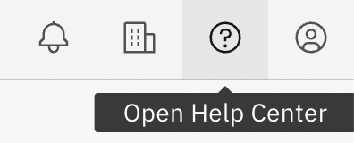
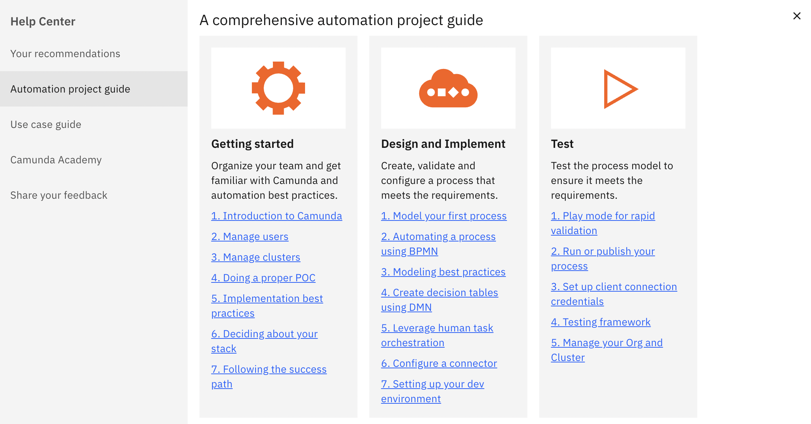

Access the Camunda Help Center
Camunda 8 SaaS offers a Help Center to all users, where you can access additional documentation, step through various use cases in Camunda, share your feedback, and more.
Visiting the Help Center
You can visit the Help Center directly from your Camunda 8 account. From Console or Modeler, click the Open Help Center icon in the top right corner of the navigation bar:

This launches a modal for the Help Center, where you are taken to the Your recommendations tab.
New user survey
At the top of Your recommendations, you may note an info box prompting you to complete the new user survey for a list of custom recommendations for additional learning.
Click Resume survey if you would like custom recommendations. Here, you may add additional details about your profile, goals, use case, and experience level. Fill out these details and click Next. Your recommendations will automatically update based on your responses.
Click Retake the survey at any time for a new list of recommendations.
Using the Help Center
Your recommendations
As mentioned, the Your recommendations tab populates a list of recommended resources and next steps based on your sign-up or in-app onboarding survey.
These resources may link to additional material in the Console, documentation, Camunda Academy, or blog.
Automation project guide
The Automation project guide tab provides a set of recommended documentation pages for each phase of an automation project with Camunda SaaS. For example, a set of pages for getting started, for designing and implementing, for testing, and for going live or improving your process.

Use case guide
The Use case guide tab provides a few getting started templates, such as process modeling or human task orchestration. These tutorials link to tutorials in Web Modeler, which may take 10-15 minutes each.
Camunda Academy
The Camunda Academy tab introduces the Camunda Academy, where you can step through free on-demand and instructor-led courses for additional learning.
For example, explore bite-sized videos for tasks like creating clusters, gain practical skills to BPMN, DMN, and Camunda training, or experience hands-on learning and personalized guidance in a virtual classroom.
Share your feedback
The Share your feedback tab offers a quick way to share product feedback, suggestions, or bug reports. This information travels directly to Camunda's Product Management team.
You may also click the Documentation or Support forum links in the bottom left corner of the modal if you would like to be taken to either of these resources at any time.
Worried about losing your place in Console or Modeler? Clicking any links in the Help Center will automatically open a new tab for additional learning, and your current tab will remain as-is within the product.